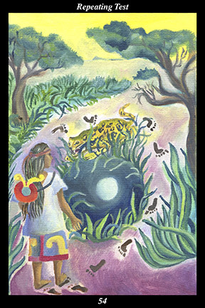

 | IMAGE A male warrior wearing the emblem of the smoking mirror pauses in his tracks. The true road runs straight ahead but the warrior’s footprints show that he has doubled back on himself, circling around a pool of water. The day sky overhead is filled with sunlight but the pool reflects the full moon in the night sky, indicating that the warrior made that past part of his journey in the dark of night. As he prepares to undertake this leg of his journey for the second time, the warrior must face the additional danger of a jaguar who now crouches beside the pool. |
INTERPRETATION
This hexagram depicts someone facing a dilemma for the second time. The male warrior symbolizes the challenges and self-discipline that make us stronger and more adaptable than we imagined. The smoking mirror symbolizes the penetrating insight, introspection, and self-knowledge required if we are to achieve a vision of the true self. That he pauses in his tracks means that you take the opportunity to slow down your decisions in order to consider your circumstances carefully and discern how they resemble a past experience you have long wished to rectify. That he has stepped off the true road to circle around the pool means that your true destiny must wait while you return to a previous stage in order to complete its task. That it is light now but the pool reflects the night sky means that you are more aware and capable now than you were when you first encountered this test. That this part of the journey is complicated by the additional danger of a jaguar lying in wait means that you clearly perceive this to be a new situation even as you use it to change your spiritual history. Taken together, these symbols mean that you heal wounds left from a past stage of development.
ACTION
The masculine half of the spirit warrior gazes into the smoking mirror of the true self without blinking. It is a time for exhibiting the character traits you believe you should have exhibited when facing a similar dilemma in the past: because you take advantage of this second chance to prove yourself to yourself, you erase past regrets and reveal your true self to the unseen forces. By turning our perception upon ourselves, we are able to sense the lessons we have learned from past mistakes. Until we have had the opportunity to act on those lessons and put them into effect, however, part of us remains frozen at that stage of our development. For that reason, there are few more fortuitous times than those in which we can prove we are stronger and wiser than in the past: by discerning our own patterns of behavior that run consistently beneath the surface of appearances, we are able to stop repeating past mistakes and emerge victorious over our own self-defeating attitudes and behaviors. Because you intuitively know that turning points periodically return until they are finally resolved, you are fully prepared to act when the time comes: because you wait vigilantly for the opportunity to revisit a period of darkness, you do not fail to use the present turning point to extend the continuity of your light further back into the past.
INTENT
Now is the time to strengthen the ladder of your evolution by descending it in order to repair a lower rung. Actions and decisions that have haunted us must be laid to rest if we are to advance further toward our rightful destiny. Within the inner landscape of our soul there are hurdles we failed to clear, pitfalls we failed to avoid, on our first encounter—where we first reacted with weakness we can now react with strength, where we first acted naively we can now act wisely, where we first reacted with fear we can now react with confidence, where we first acted selfishly we can now act lovingly. Because you do not allow this opportunity to correct the past to slip through your hands, you break the chains holding you and your allies back from ascending to the next rung of success.
SUMMARY: Don’t make the same mistake again. Some fears are false fears, some hopes are false hopes: stop and consider how you are reverting to a way of thinking, feeling, and acting that did not work before. You are stronger and wiser now—act as you wish you had acted the first time. Seize this opportunity to heal the past and you will create the future you long for.
THE LINE CHANGES
1° Many are in denial of the growing trend toward oppression—all you can do is join with those of like mind and prepare for what lies ahead. Avoid controversial positions and don’t call attention to your efforts. Make yourselves useful but anonymous.
2° Many cannot avoid the first trap—all you can do is appreciate the cunning of those above and go along with it for now. There will be time to fight for principles later but the priority now must be just surviving this time. Do not provoke envy or resentment by flaunting your little success.
3° Only the high-minded can avoid the second trap—do not even make an attempt to adapt to this situation. Withdraw into what seclusion you can muster and rely on your companions to see you through. To participate in this corruption would cause lifelong regret.
4° The darkness itself begins to wane as even some of its adherents start to question their own actions. Your integrity and practicality draw some of these people to you. Remain extremely cautious and do not take unwarranted risks, but these relationships hold potential for wresting order from chaos.
5° The situation is auspicious—you are at the vanguard of sweeping changes that will
benefit all but those you replace. The principal task for now is to brighten the emotional atmosphere and give everyone hope. Slow down—actually implementing the new will take a long time.
6° The dam breaks—the last vestiges of oppression dissolve, the will of its leadership broken, and the waters of free-thinking and creativity rush forward again. Celebrate with those around you. Spend your time training the next generation, for without continuity of principles it will all happen again.